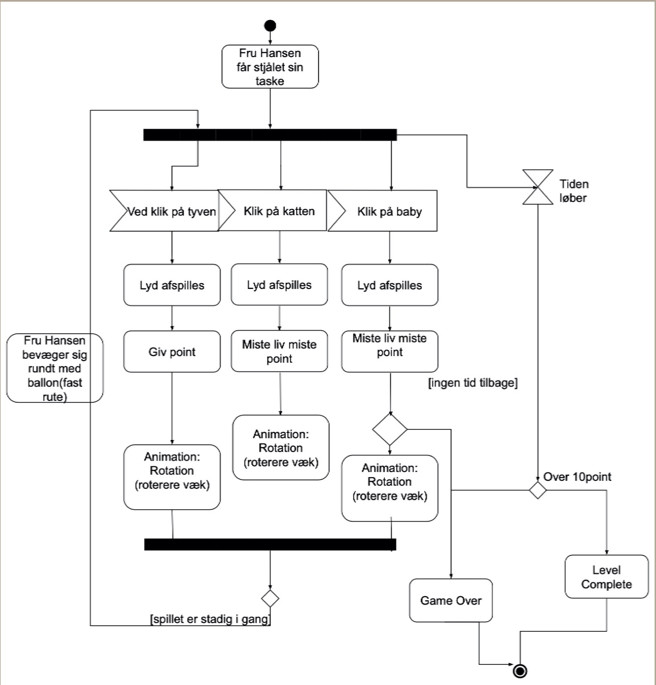
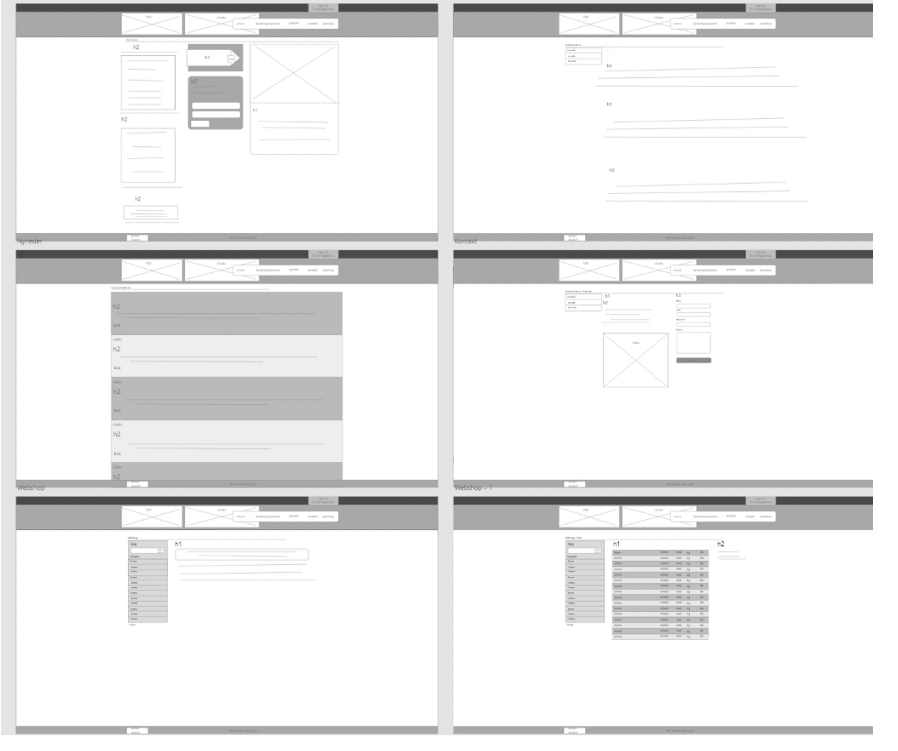

Grundlæggende Indhold
Pilotprojekt
I denne opgave blev jeg introducerede og fik lært en smule Adobe Premiere Pro til videoredigering, samt at fjerne baggrundsstøj i Adobe Audition. Projektet bestod af at jeg skulle lave et lille interview og derefter klippe materialet sammen til en film på 1 minut.
Jeg valgte at interviewe en bartender fra Sticks n Sushi om hans passion for at stå bag baren. Under optagelserne fik jeg en del indhold både til B-rolls men også et langt interview. Dog kom jeg ud for nogle udfordringer såsom for meget indhold fra interviewet og B-rolls. Jeg havde også en del udfordringer med lyset, som resulterede i en del colorgrading.
Redesign
Opgave
I dette tema skulle vi i gruppevis redesigne en selvvalgt virksomheds website. Redesignet skulle bestå i et kodet website og indeholde indholdsproduktion i form af tekst, fotos og videoer. Med det færdige produkt skulle vi også aflevere et processdokument, som dokumenterede vores arbejdsproces.
Vores gruppe valgte Ingwersen som vores selvvalgt virksomhed. Ingwersen en grønhandler grossist, som leverer frugt og grønt til større virksomheder som fx, hoteller og større restauranter.
Vi har valgt at undersøge deres hjemmeside fordi de har et interessant brand men halter bagud grundet deres hjemmeside. Lige nu fremstår Ingwersen som et brand der sælger frugt og grønt. Det er en meget enkel hjemmeside med for lidt indhold og billeder. Der er en del information men det er knap så salgsorienteret. Dermed massere vi som gruppe kan forbedre.
Igennem vores research har vi fortaget os en BERT test og en 5 sec-test. Ud fra disse to test fandt vi frem til at største delen af brugerne fandt Ingwersen side uoverskuelig, kedeligt, svær at navigere rundt I samt de også havde svært ved at finde ud hvad hjemmesiden handlede om.
Research
BERT
BERT står for Bipolar Emotional Response Testing og går ud på at man får brugerne til at vælge noget der går fra den ene pol til den anden (bipolar). Dette kunne f.eks. være flot - grim eller overskueligt - uoverskueligt. Denne metode har vi anvendt på forskellige bruger for at opnå en mening om Ingwersens nuværende hjemmeside
5 sec-test
5-sec testen gik ud på at vi fandt nogle forskellige testpersoner som skulle afkode Ingwersens nuværende hjemmeside ved kun at kigge på den i 5 sekunder. Derefter skulle de besvare 4 spørgsmål angående hjemmesiden. Denne metode har vi anvendt for at se om brugerne kunne finde ud af hvad websitet handlede om.
Processen
Styletile Før

Styletile Efter
Moodboard
Wireframe Før
Wireframe Efter
Prototype
Tryk knappen for at se Prototypen.
Sitemap Før
Sitemap Efter
Tegninger
Vi har tegnet disse i illustrator for at illustrere Ingwersens koncept. Det danner en forståelse for deres proces og hvordan det forløber sig.
Redesign af Ingwersen

Redesign
Tryk knappen for at se Redesign af Ingwersen
Proces og Dokumentation
Nedenunder kan du se procesdokumentet: